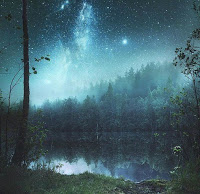

5 Три чаши
Это не было ни сном ни явью. Гамак слегка раскачивался и внезапно я ощутила сильное кружение и легкость, чувство радости усилилось так, что даже слезы выступили на глаза. Затем я провалилась. Передо мной находились двое мужчин и женщина, от которой шел свет. За ними в дымке виднелся таинственный лес.
- Мы решили сделать тебе подарок, - сказала женщина
- Подарок? - переспросила я
- Да. Мы можем предложить тебе выбор: выбрать одну из трех удивительных способностей, которая останется с тобой.
- Рано радуешься, - ответил первый, - подарочек-то с подвохом. А ты как хотела?
- Так слушай, - сказала женщина, - у нас есть для тебя подарок. Твоё право - принять его или нет. Но как только ты его примешь - обратного пути уже не будет. Ты не сможешь отказаться от новой возможности, как нельзя отнять дырку от бублика. Один раз узнав, как ее задействовать, ты получишь ключ к ее использованию.
Я завороженно глядела на лесных существ
- Итак, три дара, - продолжила женщина. Два из них будут губительны для тебя, а один из них, возможно, даст тебе то, в чем ты нуждаешься. Не зная, что есть что, тебе придется выбрать, полагаясь лишь на свое внутреннее знание
В воздухе возникли три чаши
- Ты должна выпить одну из них
- Может, вы мне расскажете, что есть что? - спросила я
- Нет, - женщина покачала головой, - разум иногда заводит в тупик. И в этот раз он может сбить тебя с твоего пути. Доверяй лишь внутреннему знанию.
Я заглянула в первую чашу. Оттуда струился чистый лучезарный белый свет. Видимо, здесь рай или нирвана, - подумала я. Если я выпью из нее - я сделаю правильный выбор, ведь именно к этому положено стремиться...
Я подошла ко второй чаше - там сверкали удивительной красоты заманчивые узоры, от нее веяло карнавалом, всплеском нескончаемой радости, восточными пряностями и разными нескончаемыми удивительностями
Нирвана-нирваной - а эта мне больше нравится. Может, в этом и есть подвох? Я готова продать вечное блаженство взамен на это удивительное великолепие
Я подошла к третьей чаше. Оттуда на меня взглянули словно тысяча глаз. Я похолодела. Но в них было что-то затягивающее, какая-то глубина. И вместе с тем в ней было что-то неотвратимое, пугающее, огромное, всеобъемлющее.
Это - самая страшная чаша, - поняла я, - видимо, это против нее меня предупреждали. Такая чаша точно не принесет радости.
Я обошла чаши еще раз
И все же - как выбрать? Решение до того просто, что кажется ловушкой. Видимо, они ждут, что я возьму первую чашу - это напрашивается.
Как бы разгадать эту загадку?
Видимо, в плоскости чистого разума искать ответ бесполезно, логические построения тут не помогут - мне об этом намекнули. Внутреннее знание... так как бы его выудить это внутреннее знание? Где бы найти совет?
В голове всплыла фраза - пока ты жив, смерть будет твоим лучшим советчиком.
Я подошла к первой чаше и окликнула смерть. Ответа я не получила. Тогда я настойчивее окликнула ее, еще и еще раз. И только после этого она выглянула из белого сияния
- Почему ты не отзываешься? - спросила я
- Стараюсь тебя не тревожить. Разве тебе понравится, если я начну тебя беспокоить среди райских кущ, в месте покоя и умиротворения
- И тем не менее, ты здесь пребываешь, - сказала я, - более того, ты здесь прячешься от меня, чтобы однажды выбраться, когда я тебя совсем не жду?
- Ты сама это сказала
- Не буду я пить из этой чаши, в ней спрятан подвох. Хотя, судя по всему, это должно было быть единственным правильным решением, к этому стоит стремиться согласно учениям.
- Знанию не нужны рабы, ни слуги, ни фанатики, готовые идти на свет, ни о чем не думая, подобно бабочкам, которые летят на свет огня и обжигают крылья. Свет надо заслужить. А ты его заслужила?
- Нет, - проговорила я
Тогда я перешла ко второй чаше
- Остается эта... две другие - смертельно опасные. Одна - содержит явную опасность, другая - тайную
Я заглянула в чашу. Да, в ней было все то, чего так просило моё сердце. Я ощущала, как мне этого не хватает. Да-да, это оно!
Я еще раз окликнула смерть
Смерть появилась из чаши и тут же удивительные узоры начали меркнуть в ее темно-синем свете. Все эти красоты показались преходящими, сиюминутными, пусть даже такими желанными, пусть даже при одной мысли о них захватывало дух
- Нет, этот великолепный карнавал - тоже не для меня, - сказала я, - ты показала мне его скоротечность.
Я перешла к третьей чаше. Смерть не пришлось окликать - она там присуствовала изначально и не пряталась. Передо мной были врата
- Неужели нет ни одной чаши, где бы тебя не было?
- Нет, моя милая. По какой бы дороге ты не шла, рано или поздно ты столкнешься со мной. Вопрос в другом: чтобы сохранить осознание, тебе нужно пройти через мои врата и не потерять себя. Эта чаша показалась тебе страшной, поскольку в ней отобразилась правда - придется пройти сложный путь. Это не будет увлекательная прогулка - здесь тебя ждет серьезная работа. Тебе придется столкнуться как с удивительными, так и с ужасными вещами. Если эти вещи тебя не разрушат, а закалят твой характер, ты получишь настоящее вознаграждение.
Я подержала в руках эту фиолетовую чашу, которую пронзали молнии и из которой глядели на меня немигающие глаза
- Ты, конечно, можешь отказаться, - сказал первый мужчина, - но ты этого не сделаешь. Ведь ты потом будешь упрекать себя в моменты отчаяния, что потеряла такой шанс. Ты же игрок и ты уже сделала свою ставку. Пей.
Я поднесла чашу к губам, вздрогнула - уж слишком она казалась гигантской, всеобъемлющей и выпила. Пока я пила, я ощущала, словно пью гигантский объем чего-то, что не могу переварить, множество циклов жизнесмерти, множество таких знакомых чужих людей, мест, времён...
Когда я выпила, я глядела некоторое время перед собой. Молчание нарушила женщина.
- Я сделала верный выбор? - спросила я
- Здесь нет верного выбора, - сказала женщина, но я тебе расскажу, от чего ты отказалась:
Первая чаша, в которой ты увидела свет - это способность-власть над водой.
Власть над водой без власти над огнём и вихрем могла легко погубить тебя. Ты бы превратилась в ту подопытную крысу, которая постоянно только и делает, что нажимает на рычажок, чтобы ей в мозг шли импульсы удовольствия, забывая о еде и сне. Но в отличии от этой крысы ты бы тешила себя мыслью, что делаешь благое дело и удовольствие - лишь награда за твои заслуги. А все твои заслуги состояли бы в умении правильно дернуть рычажок. Ты права - чтобы прийти к Свету, надо его заработать, и тогда счастье будет достойной платой за весь пройденный путь.
Вторая чаша - власть над огнем. Без власти над вихрем - вещь чрезвычайно опасная. Ты легко могла бы достигать успехов, но под конец стала бы жертвой собственного эго, стала бы прислуживать всем его желаниям. Ты бы получила то, что ты так желала, увидев в чаше и не распознав - признание, восхищение, направленное в твою сторону. Но в решающую минуту это бы тебе ничем не помогло. Рано или поздно гнев бы стал твоим спутником, пусть это даже "праведный" гнев и ты направила бы его на то, чтобы крушить "неверных".
А третья чаша - это власть над вихрем. Поскольку ты ее уже выпила - в последствиях предоставлю разобраться тебе самой
- Но хоть скажи, чего мне следует остерегаться
- Скоро сама все узнаешь...